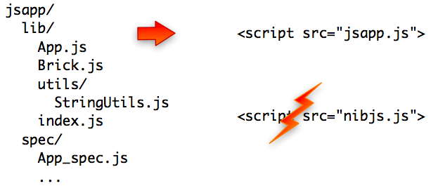

Your users don't even need NibJS as runtime dependency!
By default, you need to include nibjs.js in your webpage in order
to implement the CommonJS module specification. However if you plan to redistribute
your library, having NibJS as dependency may not be friendly for your own users.

In that case packaging a self-contained .js file containing NibJS itself makes sense: